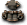
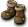

索夫特獨眼怪
我們伺服器實際的怪物設定（不是日版 wiki 的資料）。
能力值
| 項目 | 本伺服器 | 日版 wiki |
| 等級 | 20 | - |
| HP | 42～54 | - |
| AC | 95 | - |
| MC | 95 | - |
| AAR | 12 | - |
| SAR | 22 | - |
| STR | 2 | - |
| DEX | 2 | - |
| INT | 1 | - |
| WIS | 1 | - |
| CON | 1 | - |
| 經驗值 | 200 | - |
| 名聲值 | 2 | - |
| 金錢 | 220～330 | - |
| 攻擊屬性 | 無 | - |
| 防禦屬性 | 無 | - |
出現地圖
| 地圖 | 數量 | 出現位置 |
| 初級地城2 | 10～18 | 整張地圖 |
| 新手迷宮B_e | 3～4 | 範圍 (1,1)-(48,48) |
掉落道具
| 道具 | 基本機率 |
 強力生命之水 強力生命之水 | 5% |
 強力魔力之水 強力魔力之水 | 5% |
 技能之水 技能之水 | 5% |
 卡瓦克刃 卡瓦克刃 | 0.09% |
 鐵製訓練腳環 鐵製訓練腳環 | 0.9% |
 雙極長槍 雙極長槍 | 0.9% |
 [14]柒式刃材料A [14]柒式刃材料A | 0.1% |
| [11]參式護肩材料A | 0.3% |
| [11]伍式護肩材料A | 0.3% |
| 小軍鼓 | 0.05% |
 莫洛亞之甲 莫洛亞之甲 | 0.05% |
| 拉辛之甲 | 0.05% |
 迪派諾長外衣 | 0.05% |
 魔法迴避 2 階段製造法 魔法迴避 2 階段製造法 | 0.3% |
| 演奏魔力 3 階段製造法 | 0.3% |
 甘美朗豎琴製造法 甘美朗豎琴製造法 | 0.3% |
| 多佩洛豎琴製造法 | 0.3% |
| [1次]腰帶升級捲軸 | 0.1% |
| 泰特拉戰士胸甲 | 0.05% |
| 泰特拉巫師袍 | 0.05% |
 泰特拉拳法裝 泰特拉拳法裝 | 0.05% |
 泰特拉疾風騎士甲 泰特拉疾風騎士甲 | 0.05% |
 泰特拉皇家騎士鎧 泰特拉皇家騎士鎧 | 0.05% |
 泰特拉女戰士服AG 泰特拉女戰士服AG | 0.05% |
 泰特拉卡巴弗爾凱因UG 泰特拉卡巴弗爾凱因UG | 0.05% |
 活性劑處方1 活性劑處方1 | 0.1% |
| 調整精華處方2 | 0.1% |
| 修恩鞋罩製造法 | 0.3% |
| 墮落天使之鞋製造法 | 0.3% |
| WIS神器 5 階段製造法 | 0.3% |
 [鋁合金]精煉法 [鋁合金]精煉法 | 0.1% |
 失去光輝的捲軸 失去光輝的捲軸 | 0.1% |
| 神聖氣勁 | 0.1% |
 [英雄任務]MP捲軸材料A [英雄任務]MP捲軸材料A | 0.3% |
 騎士鎧甲 2 階段製造法（男） 騎士鎧甲 2 階段製造法（男） | 0.3% |
| AAR增幅器 3 階段製造法 | 0.3% |
 雙重MP附魔 雙重MP附魔 | 0.1% |
| 魔法視界 2 階段製造法 | 0.3% |
| 大海之槍(單手) | 0.05% |
 狂狼帽 狂狼帽 | 0.05% |
 小熊帽 小熊帽 | 0.05% |
| 性感之帽 | 0.05% |
| STR／CON增幅器 1 階段製造法 | 0.3% |
| STR／CON增幅器 2 階段製造法 | 0.3% |
| CON極大器 1 階段製造法 | 0.3% |
 活力皮鞋 | 0.05% |
| 活力牧師之靈 | 0.05% |
 活力哥薩克之裙 活力哥薩克之裙 | 0.05% |
 活力銀腳環 活力銀腳環 | 0.05% |
 活力魔術之衣 活力魔術之衣 | 0.05% |
 活力帕塔劍卡 活力帕塔劍卡 | 0.05% |
| 活力女斥候之衣 | 0.05% |
 活力巴塞爾短劍 活力巴塞爾短劍 | 0.05% |
| 活力英雄之衣 | 0.05% |
| 活力女英雄之衣 | 0.05% |
 [3次]戒指5階段升級捲軸 [3次]戒指5階段升級捲軸 | 0.1% |
| 鬼牌副武器SP附魔 | 0.1% |
| 墮落天使之長靴製造法 | 0.3% |
| DEX神器 5 階段製造法 | 0.3% |
| [黃金靴]升級券 | 0.1% |
| [Lv6泰特拉鎧甲AG]升級券 | 0.1% |
| [泰特拉寶珠]升級券 | 0.1% |
| [泰特拉捲軸]升級券 | 0.1% |
| [3次]寶珠1階段升級捲軸 | 0.1% |
| [3次]劍卡1階段升級捲軸 | 0.1% |
| 魔法師製造工具組 | 0.3% |
| 堅固長靴製造法 | 0.3% |
| STR神器 3 階段製造法 | 0.3% |
| 磨刀石 4 階段製造法 | 0.3% |
 迪拜諾塔爾德 迪拜諾塔爾德 | 0.05% |
 亞維儂之甲 亞維儂之甲 | 0.05% |
基本機率再乘上伺服器的掉寶倍率；「隨機一件」是從一組道具裡抽一件。